好的，我将严格按照您的要求，忠实地保留原文的准确格式，在每个段落后添加最长最详细的中文解释，包括所有涉及的公式、详细解释和举例说明，并为解释段落添加自增数字的连续编号。
Chapter2
极性共价键polar covalent bond由于电负性electronegativity差异而具有不对称的电子分布asymmetric electron distribution。
1. 极性共价键与电负性
这一段介绍了化学键的一个基本概念：极性共价键。
- 核心概念：当两个不同的原子通过共价键连接时，如果它们吸引电子的能力不同，那么成键的电子对就不会在两个原子核之间被平等地共享。这种吸引电子的能力被称为电负性（electronegativity）。
- 电子分布：电负性较强的原子会把成键电子云更多地拉向自己，导致其一侧带有部分负电荷（用 表示）。相应地，电负性较弱的原子一侧则带有部分正电荷（用 表示）。这种电子分布不均匀、不对称的状态，就形成了极性共价键。
- 举例说明：
- 在氯化氢分子（）中，氯（Cl）的电负性（约3.16）远大于氢（H）的电负性（约2.20）。因此，H-Cl键中的共享电子对会偏向氯原子。这使得氯原子带上部分负电荷（），而氢原子带上部分正电荷（）。
- 相比之下，在氢气分子（）中，两个氢原子的电负性完全相同，电子对被平等共享，形成的是非极性共价键。

2. 极性共价键的电子云图示
这张图片直观地展示了极性共价键中电子云的分布情况。
-
图示解读：图片从左到右展示了三种情况：
- 非极性共价键 (Nonpolar covalent bond)：如图中A:A所示，两个相同原子（A）成键，它们的电负性相同。成键电子云（蓝色区域）对称地分布在两个原子核之间。
- 极性共价键 (Polar covalent bond)：如图中B:A所示，两个不同原子（A和B）成键，且B的电负性大于A。电子云明显地偏向电负性更强的原子B，导致B原子一端电子云密度更高（颜色更深），带部分负电荷（），而A原子一端电子云密度较低，带部分正电荷（）。
- 离子键 (Ionic bond)：如图中B A所示，这是电负性差异极大的情况。电负性极强的原子A几乎完全夺走了电负性极弱的原子B的电子，形成了独立的阳离子（）和阴离子（）。电子完全转移，而不是共享。
-
总结：这张图形象地说明了从非极性共价键、极性共价键到离子键是一个连续过渡的过程，其本质是成键原子之间电负性差异的逐渐增大。
1 感应效应：
由于电负性差异引起的 键中电子分布的位移。
偶极矩：
| 偶极矩： | |
|---|---|
| 9.0 D | |
| 1.87 D | |
| 1.85 D | |
| 1.47 D | |
| 0 | |
| 0 |
键偶极
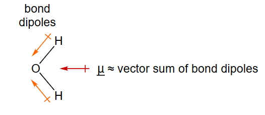
键偶极的矢量和
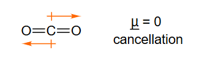
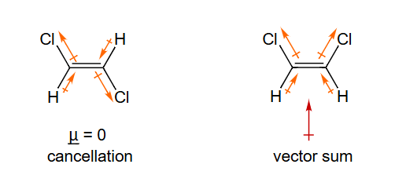
3. 感应效应与偶极矩
这个部分详细阐述了由极性共价键产生的感应效应以及衡量分子极性的物理量——偶极矩。
-
感应效应 (Inductive Effect)：当分子中存在一个电负性强的原子（或基团）时，它会通过 键（单键）吸引电子，使得与之相连的键产生极性。这种极化效应可以沿着分子链传递下去，但其影响会随着距离的增加而迅速减弱。这是一种永久性的电子效应。例如，在氯乙烷（）中，氯原子吸引电子，使得C-Cl键极化，与氯相连的碳带上部分正电荷，这个碳又会微弱地吸引下一个碳的电子，以此类推。
-
偶极矩 (Dipole Moment)：偶极矩是用来定量描述分子极性大小和方向的物理量，它是一个矢量。
- 涉及的公式：
- 公式解释：
- ：表示偶极矩矢量，其方向定义为从正电荷中心指向负电荷中心。
- ：表示分离的电荷量的大小。在一个极性键中，这就是部分正电荷（）或部分负电荷（）的电荷量。
- ：表示从正电荷中心到负电荷中心的位移矢量。
- 单位：偶极矩的单位是德拜 (Debye, D)。。
- 涉及的公式：
-
表格与图示分析：
- 表格数据：表格展示了不同分子的偶极矩大小。 是离子化合物，电荷分离彻底，偶极矩最大（）。、、 都是极性分子，具有显著的偶极矩。
- 分子偶极矩的计算：一个多原子分子的总偶极矩是其内所有键偶极 (bond dipole) 的矢量和。键偶极就是单个极性共价键的偶极矩。
- 和 的偶极矩为零：
- 二氧化碳 ()：分子是直线型结构（O=C=O）。每个C=O键都是极性键，键偶极从碳指向氧。但由于两个键偶极大小相等、方向相反（相差180°），它们的矢量和相互抵消，所以整个分子的偶极矩为零。
- 甲烷 ()：分子是正四面体结构。C-H键的极性很弱，但即使存在微弱的键偶极，由于高度对称的结构，四个键偶极的矢量和也恰好为零。
- 的偶极矩：水分子是V型（角型）结构。两个O-H键的键偶极从H指向O，它们之间存在一个约104.5°的夹角。由于不是直线型，这两个键偶极的矢量和不为零，其合矢量方向沿着角平分线指向氧原子，因此水是强极性分子。
2 形式电荷 Formal Charge
原子上的形式电荷FC是一种电子记账方法。化学反应涉及键合的变化，有一个计算电子的约定有助于理解和预测化学反应。我们的计数约定包括形式电荷和箭头表示法（本章后面讨论）。
4. 形式电荷的概念
这一段引入了**形式电荷（Formal Charge, FC）**的概念。
- 定义：形式电荷是一种人为设定的、用于电子记账的工具。它假设在一个分子或离子中，所有成键电子都在成键的原子之间被平均分配，然后将每个原子在这种分配下所带的电子数与它作为自由中性原子时应有的价电子数进行比较，得出的差值就是该原子的形式电荷。
- 目的和意义：
- 结构判断：帮助我们评估和选择一个分子最可能、最稳定的路易斯结构（Lewis Structure）。通常，形式电荷总和最小、且负的形式电荷分布在电负性最强的原子上的结构更为稳定。
- 反应预测：形式电荷可以揭示分子中潜在的反应活性位点。带正形式电荷的原子通常是亲电中心（缺电子），而带负形式电荷的原子通常是亲核中心（富电子）。
- 重要提醒：形式电荷是一个理论上的概念，它不代表原子上真实的电荷分布。真实的电荷分布由电负性等因素决定，更为复杂，通常用部分电荷（ 或 ）来表示。
形式电荷 = 自由原子中的价电子数 − 成键原子中的价电子数 = 自由原子中的价电子数 − ½ （共享电子数）− 非键合（孤对）电子数
5. 形式电荷的计算公式
此部分给出了计算形式电荷的具体公式，并用一个简单的例子进行了初步演示。
-
涉及的公式：
或者可以写成：
-
公式解释：
- (Valence electrons)：指一个孤立的、中性原子在其最外层电子层所拥有的电子数。这可以通过元素在周期表中的族数来确定（例如，碳在第IVA族，有4个价电子；氮在第VA族，有5个价电子；氧在第VIA族，有6个价电子）。
- (Nonbonding electrons)：指在分子中，该原子所拥有的、未参与成键的价电子数，即孤对电子 (lone pair electrons) 的总数。一个孤对电子包含2个电子。
- (Bonding electrons)：指该原子参与形成共价键的电子总数。每形成一个共价键（单键、双键或三键中的一根），该原子贡献一个电子，共享一对电子，所以一个单键涉及2个成键电子，一个双键涉及4个，一个三键涉及6个。公式中的 表示将共享的成键电子平均分给两个成键原子。
-
公式的另一种理解：
这里，一个原子在分子中的“所有”电子数 = 它所有的孤对电子 + 它参与的每个共价键中的1个电子。所以这个公式也可以写成：
○1
N 有 5 个价电子 valence electrons
H 有 1 个价电子 valence electron
的形式电荷 Formal charges：
6. 形式电荷计算实例：氨（NH₃）
这里通过氨分子（）的具体例子，演示了形式电荷的计算过程。
-
分析氨（）的路易斯结构：
- 中心原子是氮（N），它与三个氢（H）原子形成单键。
- 氮原子上还有一对孤对电子。
-
计算氮（N）原子的形式电荷：
-
自由N原子的价电子数 ()：氮位于第VA族，所以有 5 个价电子。
-
N原子上的非键合电子数 ()：它有一对孤对电子，所以有 2 个非键合电子。
-
N原子参与的成键电子数 ()：它形成了3个N-H单键，每个键有2个共享电子，所以总共有 个成键电子。
-
代入公式：
所以，氮原子的形式电荷为0。
-
-
计算氢（H）原子的形式电荷：
-
自由H原子的价电子数 ()：氢位于第IA族，所以有 1 个价电子。
-
H原子上的非键合电子数 ()：它没有孤对电子，所以有 0 个非键合电子。
-
H原子参与的成键电子数 ()：它形成了1个N-H单键，有 2 个成键电子。
-
代入公式：
每个氢原子的形式电荷都为0。
-
-
验证：整个分子是电中性的，其分子总电荷为0。所有原子的形式电荷之和也为 ，与分子总电荷相符。
○2
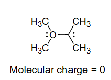
分子电荷 = 0
如何绘制：
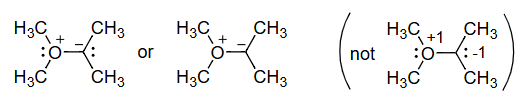
7. 形式电荷计算实例：一个含C和O的分子
这个例子展示了一个更复杂分子中各个原子形式电荷的计算。根据图示和计算，该分子是 (CH₃)₂C=C=O (二甲基乙烯酮) 的一个共振结构：(CH₃)₂C⁻-C≡O⁺。
-
分析分子结构：
- 左侧的碳原子（我们称之为C1）连接着两个甲基（-CH₃）。
- 中间的碳原子（我们称之为C2）与C1形成单键，与氧原子（O）形成三键。
- C1上带有一对孤对电子，因此带负形式电荷。
- O上带有一对孤对电子，但形成了三个键，因此带正形式电荷。
-
计算各原子的形式电荷：
- 与甲基相连的碳原子（C1）：原文的计算
C(CH₃) 4-1/2(8)-0=0实际上是指最左边的那个碳原子在另一个共振结构(CH₃)₂C=C=O中的形式电荷。让我们分析当前这个带电荷的结构。 - 带负电荷的碳原子（C1）：原文的计算
C: 4 - 1/2(6) - 2 = -1是针对这个原子的。- 价电子数 ()：碳是IVA族，为 4。
- 非键合电子数 ()：它有一对孤对电子，为 2。
- 成键电子数 ()：它与两个甲基的碳形成单键，与C2形成单键，共3个键，所以有 个成键电子。
- 计算：。
- 带正电荷的氧原子（O）：
- 价电子数 ()：氧是VIA族，为 6。
- 非键合电子数 ()：它有一对孤对电子，为 2。
- 成键电子数 ()：它与C2形成三键，有 个成键电子。
- 计算：。
- 中间的碳原子（C2）：
- 价电子数 ()：碳是IVA族，为 4。
- 非键合电子数 ()：为 0。
- 成键电子数 ()：它与C1形成单键，与O形成三键，共4个键，有 个成键电子。
- 计算：。
- 与甲基相连的碳原子（C1）：原文的计算
-
分子总电荷：，与该中性分子的总电荷相符。第二张图展示了如何通过弯箭头从不带电的共振结构
(CH₃)₂C=C=O得到这个带电荷的共振结构。
○3
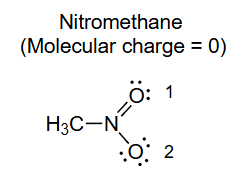
硝基甲烷
分子电荷 = 0
如何绘制：
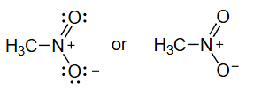
8. 形式电荷计算实例：硝基甲烷（CH₃NO₂）
这个例子计算了硝基甲烷分子中，硝基（-NO₂）部分各个原子的形式电荷。
-
分析硝基甲烷的路易斯结构：
- 中心原子氮（N）与甲基的碳（C）形成一个单键。
- 氮原子与一个氧原子（O₁）形成双键，与另一个氧原子（O₂）形成单键。
- 形成双键的O₁有两对孤对电子。
- 形成单键的O₂有三对孤对电子。
-
计算各原子的形式电荷：
- 氮原子（N）：
- 价电子数 ()：5。
- 非键合电子数 ()：0。
- 成键电子数 ()：形成了1个N-C单键，1个N=O双键，1个N-O单键，总共4个共价键，涉及 个成键电子。
- 计算：。
- 形成双键的氧原子（O₁）：
- 价电子数 ()：6。
- 非键合电子数 ()：有两对孤对电子，共 4 个。
- 成键电子数 ()：形成一个N=O双键，涉及 4 个成键电子。
- 计算：。
- 形成单键的氧原子（O₂）：
- 价电子数 ()：6。
- 非键合电子数 ()：有三对孤对电子，共 6 个。
- 成键电子数 ()：形成一个N-O单键，涉及 2 个成键电子。
- 计算：。
- 氮原子（N）：
-
分子总电荷：，与硝基甲烷作为中性分子的总电荷相符。这个例子突显了形式电荷在描述分子内部电荷分布的重要性，即使在整体中性的分子中，也可能存在带正电和负电的原子。
3 共振 Resonance
=不对称结构的等权重共振杂化体 equally weighted resonance hybrid
带有路易斯孤对的线键结构足以描述局域键合，但对于像硝基甲烷这种具有离域π键的分子则不行。上面不对称的电荷分布是不正确的，因为硝基甲烷已知是对称的，具有相等的 N-O 键长。为了使用线键结构和孤对正确描述硝基甲烷的波函数，我们需要这两个不对称结构的等权重共振杂化体：
 符号 " " 表示共振，而非平衡。
符号 " " 表示共振，而非平衡。
硝基甲烷的波函数是：。共振结构 和 并非独立的分子。它们是同一分子的不同键合描述，共振理论给出了该分子中的电子分布。在共振杂化体 中，O 原子平等地共享负电荷，N-O 键介于单键和双键之间，N-O 键长相同。这赋予了分子正确的对称性。
因为共振结构指的是单一分子，所以所有共振结构的核位置nuclear positions必须相同。
9. 共振理论
这一部分解释了共振 (Resonance) 理论，这是描述某些分子电子结构的重要概念，特别是当单一的路易斯结构无法准确描述分子性质时。
- 共振的起因：对于某些分子或离子，我们可以画出多个符合价键规则的路易斯结构，这些结构仅在电子（特别是 电子和孤对电子）的排布上有所不同，而原子核的位置保持不变。例如，上一节中的硝基甲烷，我们可以画出双键在第一个氧上，也可以画出双键在第二个氧上，这两种结构都是“合法”的路易斯结构。
- 共振结构与共振杂化体：
- 这些可以相互转换的单个路易斯结构被称为共振结构 (Resonance Structures) 或共振贡献结构。它们是假想的，并非真实存在的、可以相互转变的分子。它们之间用双向箭头 连接。
- 分子的真实结构被认为是所有这些共振结构的杂化体 (Resonance Hybrid)。共振杂化体是这些虚构结构的加权平均，其能量低于任何一个单独的共振结构，因此更加稳定。这种因共振而导致的额外稳定性被称为共振能 (Resonance Energy)。
- 硝基甲烷的例子：
- 实验事实表明，硝基甲烷中两个N-O键的键长是完全相等的，其键长介于典型的N-O单键和N=O双键之间。这与任何一个单独的路易斯结构（一个单键，一个双键）所预示的不对称性相矛盾。
- 共振理论通过将硝基甲烷描述为两个等价的共振结构（如图所示）的杂化体来解决这个问题。在共振杂化体中，N-O键的键级是1.5，负电荷（形式电荷为-1）被离域 (delocalized)，平均分布在两个氧原子上，每个氧原子带-1/2的电荷。这完美地解释了其对称的分子结构。
- 量子力学描述：
- 涉及的公式：
- 公式解释：这是从量子力学的角度描述共振杂化体。
- ：代表硝基甲烷分子真实状态的波函数。
- 和 ：分别代表两个假想的共振结构各自的波函数。
- 这个公式表示，真实的波函数是两个共振结构波函数的线性组合。
- 系数 是归一化常数，这里的两个系数相等，表明这两个共振结构对杂化体的贡献是等权重 (equally weighted) 的，因为它们本身的能量是相同的。
- 涉及的公式：
- 共振的核心规则：在画共振结构时，只能移动电子（ 电子或孤对电子），不能移动原子核。所有共振结构的原子骨架必须完全相同。
4 共轭 Conjugation
共轭是指具有相邻碳原子上平行 p 轨道的离域 体系。下面显示了一个共轭三原子 体系（烯丙基）。X、Y、Z 原子是 杂化的。
+cation 阳离子
● radical 自由基
-anion 阴离子
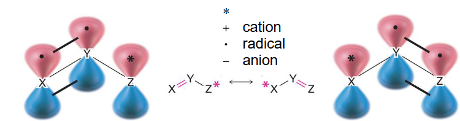
烯丙基（）：X、Y、Z 为碳原子（C）
阳离子 Cation
自由基 Radical
阴离子Anion（有两种写法）(2 ways to write it)
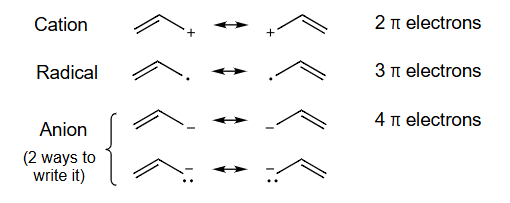
10. 共轭体系与烯丙基实例
这一节介绍了共轭 (Conjugation) 的概念，它是共振理论发生的结构基础。
-
共轭的定义：共轭是指分子中存在一个由三个或更多个相邻原子组成的体系，其中每个原子都有一个相互平行的p轨道。这些平行的p轨道可以侧向重叠，形成一个跨越这些原子的、连续的、离域的 体系。电子在这个大的体系中不再局限于两个原子之间，而是在所有参与共轭的原子间自由移动。
-
常见的共轭体系类型：
- 交替的单键和多键（如1,3-丁二烯：）。
- 键与相邻的带孤对电子的原子（如氯乙烯：）。
- 键与相邻的带正电荷的原子（空p轨道）。
- 键与相邻的带单电子的原子。
-
烯丙基体系 (Allyl System)：
- 这是一个典型的三原子共轭体系，通式为 ，其中都是杂化，拥有平行的p轨道。在烯丙基中，都是碳原子。
- 图示解释：上面的图显示了三个相邻的原子（），每个原子都有一个垂直于分子平面的p轨道。这些p轨道相互平行，可以发生重叠，形成一个大的分子轨道，允许电子在三个原子之间离域。
-
烯丙基的三种形式及其共振：
- 烯丙基阳离子 (Allyl Cation)：
- 这是一个带正电荷的体系。正电荷表示末端碳上有一个空的p轨道。这个空p轨道与双键的体系形成共轭。
- 共振： 电子可以移动，使得正电荷在两个末端碳原子之间离域。其共振结构为：
- 真实的烯丙基阳离子中，两个C-C键是等同的，正电荷平均分配在两个末端碳原子上。
- 烯丙基自由基 (Allyl Radical)：
- 末端碳上有一个带单电子的p轨道，与双键的体系形成共轭。
- 共振：单电子和电子可以移动，使得未成对电子在两个末端碳原子之间离域。
- 烯丙基阴离子 (Allyl Anion)：
- 末端碳上有一个带孤对电子的p轨道，与双键的体系形成共轭。
- 共振：孤对电子可以移动形成新的键，同时原有的键断裂形成新的孤对电子。负电荷在两个末端碳原子之间离域。
- 烯丙基阳离子 (Allyl Cation)：
5 使用弯箭头生成共振结构
使用弯箭头生成共振结构
移动电子对，而非原子
从具有最强给电子能力的位点开始画箭头
○1
在带有负电荷的原子上的孤对
○2
在中性原子上的孤对
○3
在 键上


在 和烯丙基中，共振结构在共振杂化体中具有相同的权重。在一般情况下，共振结构具有不等的权重。
11. 弯箭头方法绘制共振结构
这一部分介绍了绘制共振结构的标准化工具——弯箭头 (Curved Arrow)，并给出了使用规则。
- 弯箭头的含义：
- 在化学中，一个完整的弯箭头代表一对电子 (an electron pair) 的移动。
- 箭头的尾部指向电子的来源（即电子从哪里来）。
- 箭头的头部指向电子的去向（即电子到哪里去，形成新的键或孤对）。
- 核心规则：
- 只移动电子，不移动原子：这是共振理论最基本的规则。
- 遵循价键规则：移动电子后得到的新结构必须是合法的路易斯结构，特别是第二周期元素（如C, N, O）的价电子总数不能超过8个（八隅体规则）。
- 电子来源的优先顺序：绘制箭头时，通常从电子最丰富、最不稳定的地方开始，即给电子能力最强的地方。其优先顺序如下：
- 带负电荷原子的孤对电子：这是最强的电子给体。例如，烯丙基阴离子中的负电荷碳上的孤对电子。
- 中性原子的孤对电子：例如，醇或醚中氧原子的孤对电子。
- 键中的电子： 电子比 电子更活泼，更容易移动。
- 图示分析：
- 示例1 (烯丙基阴离子)：箭头从带负电荷的碳上的孤对电子开始，指向相邻的C-C单键，表示在这里形成一个新的C=C双键。为了不让中间的碳超过八隅体，原来的C=C双键中的电子必须移动，因此第二个箭头从C=C双键指向末端的碳原子，表示这对电子变成该碳原子上的孤对电子。
- 示例2 (苯酚)：箭头从苯环外的中性氧原子的孤对电子开始，移动到C-O键之间形成C=O双键。为保持环上碳的八隅体，相邻的C=C双键电子移动到下一个碳原子上，形成一对孤对电子和负电荷。
- 示例3 (烯丙基阳离子)：这里没有富余的孤对电子，唯一的电子来源是键。箭头从C=C双键开始，移动到C-C单键上，形成一个新的C=C双键。这导致原来的双键末端碳原子失去电子，带上正电荷。
- 共振结构的权重：
- 最后一段指出，像硝基甲烷和烯丙基体系中的共振结构，因为它们在能量上是等价的，所以对共振杂化体的贡献权重相等。
- 然而，在许多其他情况下（如上面的苯酚例子），不同的共振结构能量不同，因此它们对杂化体的贡献权重不相等。能量越低的（即越稳定的）共振结构，贡献越大，被称为主要共振结构 (Major Resonance Contributor)。
6 识别主要共振结构
如何识别主要共振结构，按重要性排序：
○1
八隅体规则

○2
最小电荷分离

○3
负电荷应位于电负性更大的原子上

12. 判断主要共振结构的规则
这一部分给出了判断不同共振结构相对稳定性的三条主要规则，并按重要性进行了排序。一个共振结构越稳定，它对最终的共振杂化体的贡献就越大。
-
规则一：八隅体规则 (Octet Rule)
- 内容：具有更多原子（特别是第二周期元素C, N, O, F）满足8个价电子（即八隅体）的共振结构更稳定。这是最重要的规则。
- 图示分析：以甲醛为例，画出了两个共振结构。
- 左侧结构：碳和氧都形成了双键，碳周围有8个电子，氧周围也有8个电子（4个成键电子+4个孤对电子）。所有原子都满足八隅体规则。
- 右侧结构：氧带负电，碳带正电。此时，氧仍然满足八隅体（2个成键电子+6个孤对电子），但碳原子周围只有6个价电子，不满足八隅体规则。
- 结论：左侧的结构是主要共振结构，因为它让所有原子都满足了八隅体。
-
规则二：最小电荷分离 (Minimum Charge Separation)
- 内容：在满足八隅体规则的前提下，形式电荷更少、电荷分离更小的结构更稳定。中性结构通常比带电荷分离的结构稳定。
- 图示分析：以乙烯酮（）为例。
- 左侧结构：所有原子的形式电荷均为0，是电中性结构。
- 中间和右侧结构：都存在正负电荷分离（ 或 ）。
- 结论：左侧的电中性结构是主要共振结构。
-
规则三：负电荷在电负性更强的原子上
- 内容：当多个共振结构都存在形式电荷时，将负电荷置于电负性最强的原子上、将正电荷置于电负性最弱的（或电正性的）原子上的结构更稳定。
- 图示分析：以烯醇负离子为例。
- 左侧结构：负电荷位于碳原子上。
- 右侧结构：通过共振，负电荷转移到了氧原子上。
- 电负性比较：氧的电负性（约3.44）远大于碳（约2.55）。
- 结论：将负电荷放在电负性更强的氧原子上的右侧结构，比放在碳原子上的左侧结构更稳定，是主要共振结构。
7 布朗斯特酸碱平衡
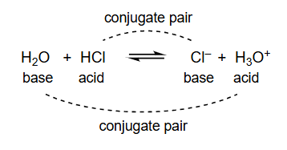
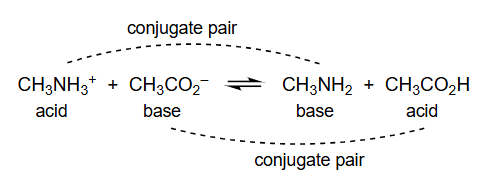
13. 布朗斯特-劳里酸碱理论
这一节引入了布朗斯特-劳里 (Brønsted-Lowry) 酸碱理论，这是有机化学中最常用的酸碱理论。
-
核心定义：
- 布朗斯特酸 (Brønsted Acid)：质子（）的给予体 (donor)。
- 布朗斯特碱 (Brønsted Base)：质子（）的接受体 (acceptor)。
-
酸碱反应的本质：一个布朗斯特酸碱反应的本质就是一个质子从酸转移到碱的过程。
-
共轭酸碱对 (Conjugate Acid-Base Pair)：
- 当一个酸失去一个质子后，剩下的部分就是它的共轭碱 (conjugate base)。
- 当一个碱接受一个质子后，形成的新物质就是它的共轭酸 (conjugate acid)。
- 例如，在 反应中， 和 是一对共轭酸碱对， 和 是另一对共轭酸碱对。
-
示例分析：
- 第一个反应：
- 失去了质子变成了，所以 是酸， 是它的共轭碱。
- 接受了质子变成了，所以 是碱， 是它的共轭酸。
- 第二个反应：
- 这是一个从右向左更容易理解的反应，但我们按书写方向分析。
- （甲铵离子）失去了质子变成了 （甲胺），所以 是酸， 是它的共轭碱。
- （乙酸根）接受了质子变成了 （乙酸），所以 是碱， 是它的共轭酸。
- 第一个反应：
8 酸强度通过 衡量
在任意溶剂中， 是以下反应的有效平衡常数effective equilibrium constant：
表示质子化溶剂（在水中为 ）。

| Conjugate Acid | pKa | Conjugate Base | ||
|---|---|---|---|---|
| Weakest Acid → | NH₃ | 35 | NH₂⁻ | ←Strongest Base |
| H₂O | 16 | OH⁻ | ||
| CH₃CH₂OH | 16 | CH₃CH₂O⁻ | ||
| NH₄⁺ | 10 | NH₃ | ||
| HCN | 9 | CN⁻ | ||
| CH₃CO₂H | 5 | CH₃CO₂⁻ | ||
| HF | 3 | F⁻ | ||
| H₃O⁺ | -1 | H₂O | ||
| Strongest Acid | HCl | -7 | Cl⁻ | ←Weakest Base |
| 共轭酸 | pKa | 共轭碱 | ||
|---|---|---|---|---|
| 最弱酸 → | NH₃（氨） | 35 | NH₂⁻（氨负离子） | ← 最强碱 |
| H₂O（水） | 16 | OH⁻（氢氧根） | ||
| CH₃CH₂OH（乙醇） | 16 | CH₃CH₂O⁻（乙醇负离子） | ||
| NH₄⁺（铵离子） | 10 | NH₃（氨） | ||
| HCN（氢氰酸） | 9 | CN⁻（氰离子） | ||
| CH₃CO₂H（乙酸） | 5 | CH₃CO₂⁻（乙酸根） | ||
| HF（氢氟酸） | 3 | F⁻（氟离子） | ||
| H₃O⁺（水合氢离子） | -1 | H₂O（水） | ||
| 最强酸 | HCl（盐酸） | -7 | Cl⁻（氯离子） | ← 最弱碱 |
14. 酸强度的量度：Ka 和 pKa
这一节介绍了如何定量地衡量酸的强度，即使用酸度系数 和 。
-
酸度系数 ()：
-
对于一个酸（HA）在水中的电离平衡反应：。
-
其平衡常数 。
-
由于在稀溶液中，水的浓度 几乎是一个常数（约55.5 M），我们可以将其并入平衡常数，得到一个新的常数，即酸度系数 。
-
涉及的公式：
或简化为：
-
的物理意义： 值越大，表示在平衡时，酸电离产生的 和 浓度越高，酸的强度越强。
-
-
：
- 由于值通常很小，跨越多个数量级，使用对数形式的 会更方便。
- 涉及的公式：
- 的物理意义：由于负对数关系， 值越小，对应的 值就越大，酸的强度越强。
- 举例说明：乙酸（）的 约为4.6，而盐酸（）的 约为 -7。因为 -7 < 4.6，所以盐酸是比乙酸强得多的酸。
-
表格分析：
- 表格列出了一系列共轭酸碱对的 值。
- 酸强度趋势：从上到下， 值逐渐减小，意味着酸性逐渐增强。氨（）作为酸时非常弱（），而盐酸（）是非常强的酸（）。
- 碱强度趋势：酸越强，其共轭碱就越弱；反之，酸越弱，其共轭碱就越强。因此，表格中共轭碱的强度是从下到上逐渐增强的。 是非常弱的碱，而 是非常强的碱。
- 这个表格是进行酸碱反应方向判断的重要工具。
9 酸碱平衡的哪一侧浓度更高？=哪一侧的自由能更低？
步骤：比较共轭酸的 值。
浓度更高=自由能更低
浓度最高的分子
=最弱的酸+最弱的碱
=热力学上最稳定的物种
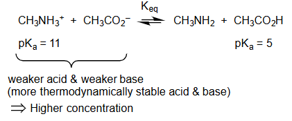
=
= 较弱的酸 和 较弱的碱 weaker acid & weaker base
= 热力学上更稳定的酸和碱 weaker acid & weaker base
= 较高浓度 Higher concentration
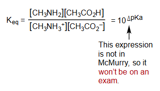
=不考

15. 判断酸碱平衡的方向
这一部分阐述了如何利用 值来预测酸碱反应平衡移动的方向，即判断反应物和产物哪一方的浓度在平衡时更高。
-
基本原则：
- 化学反应总是自发地从能量较高的状态（较不稳定的物种）向能量较低的状态（较稳定的物种）进行。
- 在酸碱反应中，强酸和强碱是较不稳定的、反应活性高的物种。
- 弱酸和弱碱是较稳定的、反应活性低的物种。
- 因此，酸碱平衡总是倾向于生成更弱的酸和更弱的碱的一侧。
-
判断步骤：
- 找出反应方程式左右两侧的两种酸。
- 比较这两种酸的 值。
- 值更大的酸是更弱的酸。
- 平衡将位于更弱的酸所在的那一侧。
-
示例分析：
- 反应：
- 识别酸：反应物中的酸是甲铵离子 ，产物中的酸是乙酸 。
- 比较 ：
- 结论：因为 ，所以 是比 更弱的酸。
- 平衡方向：平衡将显著地偏向左侧，即生成弱酸 和其共轭碱（也是弱碱）的一侧。在平衡时，反应物 和 的浓度会远高于产物 和 的浓度。
- 反应：
-
平衡常数 的估算（注释为不考）：
- 涉及的公式：
- 示例计算：
- 结果解读： 是一个远小于1的数，这定量地说明了平衡强烈地偏向反应物（左侧），与之前的定性判断完全一致。
- 涉及的公式：
○ 的推导
考虑两个酸的 ：
16. 平衡常数公式的推导
这个部分详细地推导了上一节中提到的用于估算酸碱反应平衡常数 的公式。
-
推导目标：证明对于反应
反应物酸 + 反应物碱 ⇌ 产物碱 + 产物酸，其平衡常数 。 -
推导步骤详解：
-
写出目标反应的 表达式： 对于反应 ，根据平衡常数的定义：
-
引入 表达式：分别写出反应物酸（）和产物酸（）的 定义式。
-
数学变形：为了将 表达式代入 ，对 表达式的分子和分母同时乘以 。这一步不改变分式的值。
-
重新组合：将上式中的项重新组合，使其凑成两个 表达式的形式。
可以发现，第一项就是 ，第二项是 。
-
得出 与 的关系：
-
转换为 形式：利用关系式 代入上式。
根据指数运算法则 ，可得：
-
代入数值计算：
推导完成。注意原文的
10^-(11-5)在数学上是等价的。
-
10 使用弯箭头来描绘反应中键合的变化并跟踪电子对
使用弯箭头来描绘反应中键合bonding的变化并跟踪电子对electron pairs
●移动电子对，而非原子
从具有最强给电子能力的位点开始画箭头：
○1
在带有负电荷的原子上的孤对
○2
在中性原子上的孤对
○3
在 键上
正向反应 Forward reaction

逆向反应 Backward reaction

错误示例1：
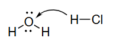
应该移动电子对，而非原子
错误示例2：

17. 使用弯箭头描述反应机理
这一节将之前用于绘制共振结构的弯箭头方法，应用到描述**化学反应过程（反应机理）**中。
-
核心思想：化学反应的本质是旧化学键的断裂和新化学键的形成，这背后是电子的重新排布。弯箭头直观地展示了电子对在这一过程中的流动路径。
-
规则重申：
- 弯箭头表示一对电子的移动。
- 箭头从电子源（富电子区域，如孤对电子、键）出发，指向电子汇（缺电子区域，如带正电荷的原子、极性键的正电端）。
- 箭头描述的是电子的移动，而非原子的移动。
-
示例分析： 与 的反应
- 正向反应 ()：
- 第一步：成键。水分子（）作为碱/亲核试剂，其氧原子上的孤对电子是电子源。氯化氢（）中的氢原子由于与高电负性的氯相连而显正电性，是电子汇。因此，第一个箭头从 的氧原子的一对孤对电子出发，指向 的氢原子。这个箭头表示形成了一个新的 键。
- 第二步：断键。当新的 键形成时，氢原子不能同时形成两个键。因此，原有的 键必须断裂。第二个箭头从 键的中间出发，指向氯原子。这表示 键中的一对成键电子完全转移给氯，成为氯离子（）上的一对孤对电子。
- 逆向反应 ()：
- 第一步：成键。氯离子（）作为碱/亲核试剂，其孤对电子是电子源。水合氢离子（）中的氢原子是酸性质子，是电子汇。因此，第一个箭头从 的一对孤对电子出发，指向 的一个氢原子。这个箭头表示形成了一个新的 键。
- 第二步：断键。为形成新的 键， 必须失去一个质子。第二个箭头从被攻击的那个 键的中间出发，指向氧原子。这表示这对成键电子变回水分子中氧原子的一对孤对电子。
- 正向反应 ()：
-
错误示例分析：
- 错误1：箭头从氢原子（原子核）出发，这是错误的。箭头必须从电子对出发。
- 错误2：这张图展示了多个错误。例如，逆向反应中， 键断裂的箭头指向了氢原子而不是氧原子。这违反了电子流动的方向。正确的画法应如“逆向反应”图所示。
11 绘制弯箭头以显示该反应中的键合变化bonding changes

步骤：
○1
在产物product中找到反应物原子reactant atoms
○2
确定反应过程中形成和断裂的键
○3
绘制弯箭头以显示电子对的移动。
○4
补上孤对电子，可能还有 键。Put in lone pairs and maybe bonds
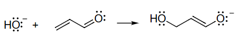
○5
编号通常有帮助
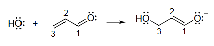
形成的键
断裂的键
18. 绘制反应机理弯箭头的系统步骤
本节提供了一个系统性的方法，指导如何在给定反应物和产物的情况下，正确地绘制出描述该反应机理的弯箭头。
-
方法论：这是一个逆向工程的过程，通过对比反应前后分子结构的变化，来推断电子是如何移动的。
-
具体步骤详解：
- 原子对应：首先，仔细观察反应物和产物的结构，将产物中的每一个原子与它在反应物中的来源对应起来。给原子编号是一个非常有用的技巧，可以帮助清晰地追踪每个原子的去向。
- 键的变化分析：
- 识别形成的键：比较产物和反应物，找出产物中有而反应物中没有的键。在示例中，新形成了 键 和 键。
- 识别断裂的键：找出反应物中有而产物中没有的键。在示例中，断裂了 键 和 键。
- 绘制弯箭头：现在，根据键的变化来画箭头，让电子的流动能够合理解释这些变化。
- 为了形成 键，必然是 上的孤对电子攻击了 。所以画出第一个箭头。
- 攻击 后，若没有其他电子移动， 周围将有5个键（超过八隅体）。为了解决这个问题， 的 键必须断裂。这对电子移动到 和 之间，形成了新的 键。所以画出第二个箭头。
- 当 之间形成 键后， 周围将有5个键（超过八隅体）。因此， 双键中的 键必须断裂。这对电子移动到氧原子上，成为一对孤对电子。所以画出第三个箭头。
- 补充细节：在完成箭头绘制后，检查并补全所有相关的孤对电子和形式电荷，确保反应前后电荷守恒，并且所有结构都符合路易斯结构规则。
-
示例反应类型：这个反应是共轭加成（或称为迈克尔加成）的一个典型例子，其中亲核试剂（）攻击了 -不饱和羰基化合物的 -碳（C3）。
12 弯箭头的标注

a 从这里开始，因为 带有电荷charge，我们需要形成 O-C 键bond。 b 为了保持 C3 上的八隅体octet并形成 C1C2 键。 c 为了保持 C1 上的八隅体并将电荷放在 O 上。
19. 弯箭头绘制的逻辑解释
这一部分对上一节绘制的三个弯箭头，提供了详细的逻辑依据，解释了为什么要这样画以及每一步的化学意义。
-
箭头 a 的逻辑 (起始步骤)：
- 解释：反应的起始点是亲核试剂（）对亲电试剂（-不饱和羰基化合物）的进攻。 是电子最丰富的物种（带负电荷，有孤对电子），因此它是电子的起始源。它会攻击分子中缺电子的位点。在这个共轭体系中，C3和C1都是亲电位点，但攻击C3会引发一系列共轭电子移动，是此反应的典型路径。因此，箭头从 的孤对电子出发，指向C3，表示形成新的 键。
-
箭头 b 的逻辑 (中间步骤)：
- 解释：这是对初始进攻的响应。当新的 键形成时，C3原子面临违反八隅体规则的风险。为了维持C3的八隅体，必须有一个键断裂。与断裂 键相比，断裂能量较低的 键更为有利。因此， 的 电子对被“推”走，移动到 之间，形成一个新的 键。这一步是共轭体系传递电子效应的体现。
-
箭头 c 的逻辑 (终止步骤)：
- 解释：这是电子流动的最终步骤。当 之间形成新的 键时，C1原子（羰基碳）又面临违反八隅体规则的风险。为了维持C1的八隅体，羰基（）中能量较高的 键断裂。这对电子被推到电负性最强的氧原子上，成为一对孤对电子。这样做有两个好处：1) 解决了C1的八隅体问题；2) 将反应产生的负电荷安置在最能稳定它的氧原子上，形成一个相对稳定的烯醇负离子中间体。
13 弯箭头，1924

20. 弯箭头的历史渊源
这一部分通过一张历史图片，简要提及了弯箭头这一重要化学符号的起源。
- 历史背景：图片展示的是早期化学文献中对手写弯箭头的使用。弯箭头作为一种表示电子移动的符号，彻底改变了有机化学家思考和描述化学反应的方式。它使得反应机理的讨论从纯粹的经验描述，转向了基于电子理论的、可预测的逻辑框架。
- 主要贡献者：在20世纪20年代，英国化学家罗伯特·鲁宾逊 (Robert Robinson) 和阿瑟·拉普沃斯 (Arthur Lapworth) 是发展和推广使用弯箭头来描述反应机理的先驱。他们的工作为现代物理有机化学奠定了基础。
- 意义：这张1924年的图例象征着一个时代的开始，即化学家开始能够“看见”电子在分子转化过程中的动态行为。从那时起，弯箭头就成为了全世界化学家通用的、不可或缺的语言。